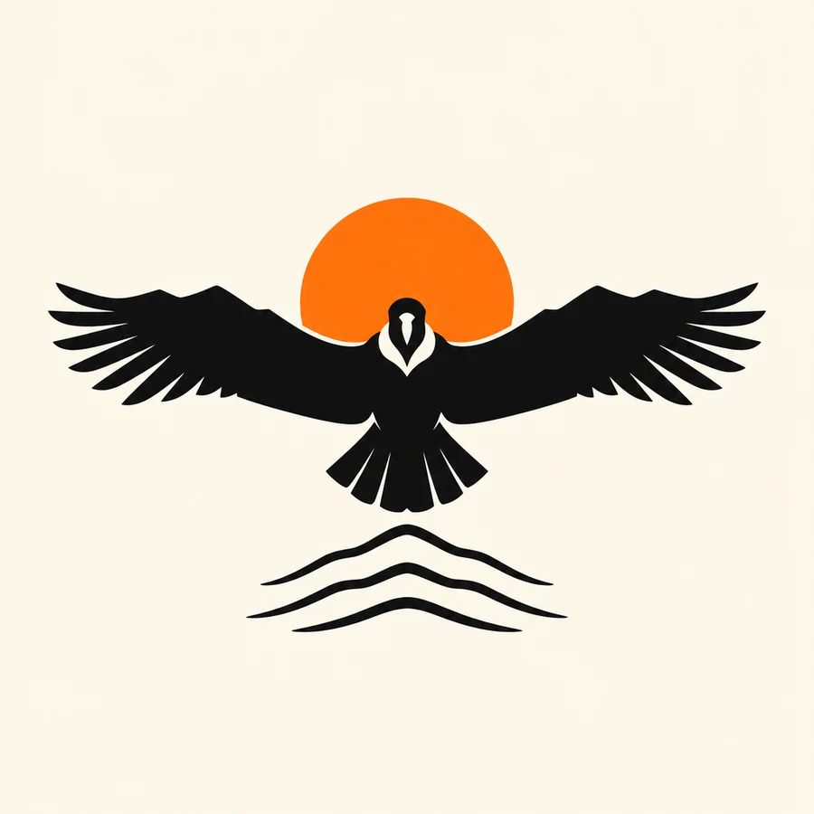

CALE + WALT / YOUR WORLD, BROUGHT TO LIFE.
THREE WAYS
TO TAKE FLIGHT.
Choose a direction. Play with the full site.
Tell us what feels like Gryphus.
Open the experiences. Hear the mood. Build your weekend.
Choose Field Guide ↓THREE COLLECTIONS. MADE TO KEEP.
TAKE THE
WEEKEND HOME.
Pick a collection, or mix your favorites.
These are design visions for Cale’s review.

Concept mockups, not items for sale. Product specifications and artwork need a supplier proof before production.
MAKE IT YOURS.
WHAT FEELS
LIKE GRYPHUS?
Keep a whole direction or mix the parts you love.
Your selection and notes become one simple reply.
THE BIRD AND THE SUN, DRAWN AGAIN.
THE MARK,
TWO WAYS.
Gordon asked whether the logo could be cleaner. Neither of these throws anything away: one tightens the mark you already have, the other draws the tagline. Both are studies for you and Walt to react to.

The 2026 triangle is a little loose and the bird tangles into the sun. Here the triangle is truly equilateral, the sun sits concentric inside it, and a keyline lifts the bird clear so the silhouette survives at cap-badge size and in one color embroidery.
The argument: continuity. Anyone who came in 2026 recognizes it in a second.
See the second variation ↗
The bird head on, wings spread flat so the wing line doubles as a ridgeline. Three contours below, the 2027 orange sun rising behind. Ride the hills, hear the music, drawn rather than written: the wings are the hills.
The risk, plainly: it drops the triangle, so it reads as a rebrand rather than an evolution.
See the second variation ↗One question only you two can answer. Gryphus: condor or griffin? Vultur gryphus is the Andean condor, and direction B commits to that reading. If the name was always the griffin, B is the wrong animal and A is the safer road.
Both studies are raster images, not artwork. Whichever direction you pick gets redrawn as real curves before it goes near a cap, a patch or a vendor file. Nothing here belongs in the brand guide as a master yet.
FROM GORDON. SUGGESTIONS, NOT DECISIONS.
SIX THINGS
WORTH A LOOK.
You and Walt program this festival. These came out of reading the 2026 card next to the 2027 board, and every one of them uses ground, sky or a porch that already exists.
01The night is the venue.
Comfort has genuinely dark skies and people are already sleeping on the ranch. After the last set, a guided stargazing hour with telescopes from a San Antonio astronomy club, blankets on the grass, nothing amplified. It costs almost nothing, needs no stage, and it is the most photogenic thing a Hill Country ranch owns.
02Birding, because the festival is named after a bird.
A dawn walk on the singletrack before the race, led by a local Audubon volunteer. The Hill Country is a serious birding destination: golden cheeked warbler, black capped vireo. This is the one that makes the brand mean something. Right now the bird is decoration; this turns it into a reason, and it gives the patch and the poster a story.
03A songwriter round, unamplified.
Three or four writers trading songs in a circle, forty minutes, no production. It is the format musicians themselves like most, and it is exactly the intimacy a small festival can offer that a big one cannot. Late afternoon in the shade, or as the thing that follows the headline.
04Dawn patrol.
First light on the caliche before the race. Walt already leads group rides; this is his thing with a name on it.
05A trail stewardship hour.
An hour of trail work with the ranch crew, tools provided. People who build a trail come back to ride it, and it earns goodwill with Flat Rock Ranch, who were a named 2026 partner.
06Creek time.
The address is 346 Flat Rock Creek Road. If there is water, program it. The hottest hour of a Hill Country afternoon is the easiest hour on the schedule to fill.
One structural thought, offered gently. The 2027 board carries eleven pillars. The 2026 card carried six, and the festival is deliberately small. Eleven on a poster reads as ambition; eleven actually delivered reads as a county fair. Three or four things done beautifully make a stronger weekend and a much stronger brand, which is why the list above is offered as replacements rather than additions.
Laser tag is deliberately not on this list. Nothing here needs new infrastructure, and nothing here adds a second amplified stage, which would fight both the dark sky and the camping.
FROM THE FIRST IDEA TO THE REAL WORLD.
A WHOLE WORLD.
ONE CLEAR IDENTITY.
Corrected lettering. Every experience. A cleaner, usable visual system.
Explore the board ↗02 / READY FOR YOUR COLLABORATORSThe designer’s guideIdentity, color, type, photography, partner use, signage and merchandise.
Open the style guide ↗What is established, and what is still being explored? +
Dates: April 30 to May 2, 2027. Place: Flat Rock Ranch, Comfort, Texas. Walt curates the music; Cale is executive producer. The experiences visualize Cale’s 2027 creative direction. Lineup, tickets, race entries, camping arrangements, partner commitments and operational policies still need event-specific confirmation.
Generated campaign art is labeled as concept imagery. Gordon and Cale’s April 2026 photograph is a real memory. No sponsor affiliation is asserted. The original bird-and-sun concept stays central; the founder story behind the name is a useful next conversation.